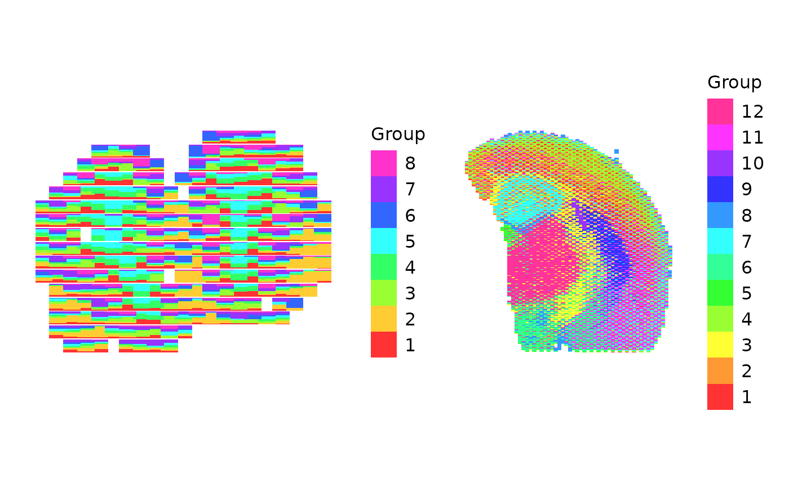

Visualizing multiple datasets with scatterbar
Dee Velazquez and Jean Fan
2024-11-26
Source:vignettes/visualizing-multiple-datasets.Rmd
visualizing-multiple-datasets.RmdVisualizing multiple datasets with scatterbar
This tutorial demonstrates how to visualize multiple datasets
together, utilizing the package patchwork.
Below we can load in our datasets provided by scatterbar
and create the respective scatterbars using those datasets and save them
to a variable.
library(scatterbar)
library(ggplot2)
data("mOB")
data("adult_mouse_brain_ffpe")
# Basic scatterbar plot with default settings
p1 <- scatterbar(mOB$data, mOB$xy) + coord_fixed()
#> Calculated size_x: 1.24034734589208
#> Calculated size_y: 0.930260509419063
#> Applied padding_x: 0
#> Applied padding_y: 0
p2 <- scatterbar(adult_mouse_brain_ffpe$prop, adult_mouse_brain_ffpe$pos) + coord_fixed()
#> Calculated size_x: 302.260275014085
#> Calculated size_y: 323.465991707814
#> Applied padding_x: 0
#> Applied padding_y: 0We can then load in patchwork and visualize both
scatterbars in one plot.
